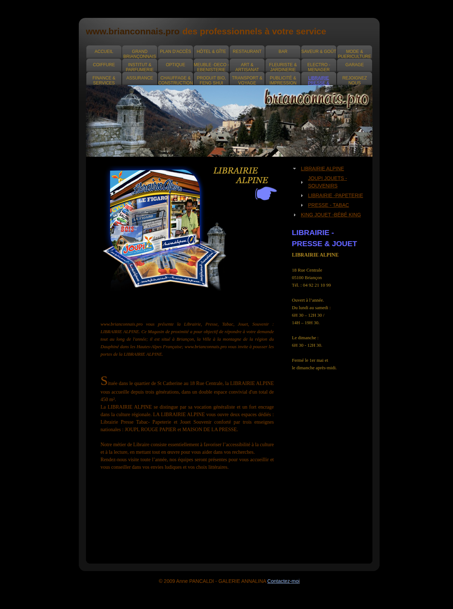
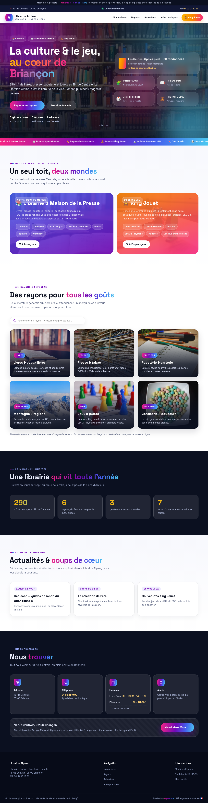

Avant — l'ancienne version
Une page d'annuaire, fond noir

Capture réelle de la page (annuaire brianconnais.pro) — le domaine librairie-alpine.fr n'est plus qu'une redirection.
- Fond noir et style années 2000 (© 2009)
- Simple fiche d'annuaire : adresse, téléphone, horaires
- Pas de photos réelles, illustrations d'époque
- Pas adapté aux smartphones
- King Jouet absent de la présentation
- Aucune actualité, aucun référencement propre
⚠️En 2026, le site ne vend plus la maison : il ne la montre même plus. La boutique mérite mieux que cette page.
Après — la proposition Alpesdata
 Variante 1 — Papier & SapinÉditorial crème, sérif classique
Variante 1 — Papier & SapinÉditorial crème, sérif classique
 Variante 2 — Vitrine EnsoleilléeLumineux, familial, jaune soleil
Variante 2 — Vitrine EnsoleilléeLumineux, familial, jaune soleil
 Variante 3 — Noir ÉlégantPremium, nuit alpine, contraste fort
Variante 3 — Noir ÉlégantPremium, nuit alpine, contraste fort
Un vrai site vitrine, deux univers
Variante 1 — Papier & SapinÉditorial crème, sérif classique
Variante 2 — Vitrine EnsoleilléeLumineux, familial, jaune soleil
Variante 3 — Noir ÉlégantPremium, nuit alpine, contraste fort

Variante 4 — Vitrine FlashyPhotos réelles, dégradés vifs, animationsLes quatre directions proposées — Papier & Sapin · Vitrine Ensoleillée · Noir Élégant · Vitrine Flashy : cliquez sur une vignette pour ouvrir la maquette.
- Image moderne et chaleureuse, 100 % mobile
- Photos réelles de la boutique (à venir)
- La librairie et l'espace King Jouet mis en valeur
- Horaires, accès, téléphone en un clic
- Actualités : dédicaces, nouveautés, coups de cœur
- Référencement local Briançon + hébergement en France
✨Un site qui travaille pour le magasin : il attire, il informe, il donne envie de pousser la porte de la rue Centrale.
Le comparatif détail par détail
Point par point, ce qui change entre la version d'hier et la proposition d'aujourd'hui.
| Critère | Ancienne version | Nouvelle version |
|---|---|---|
| Format | Fiche dans un annuaire local (brianconnais.pro) — le domaine ne fait que rediriger | Site vitrine autonome : librairie-alpine.fr (ou nouveau nom) héberge un vrai site |
| Design | Fond noir, style années 2000, illustrations d'époque | 4 directions modernes : éditorial crème, lumineux familial, noir premium, vitrine flashy |
| Mobile | Non adapté aux smartphones | Conçu mobile d'abord : parfait sur téléphone, tablette, ordinateur |
| King Jouet | Absent de la présentation (autre fiche d'annuaire) | Espace dédié, visible dans la navigation et la page d'accueil |
| Rayons | Énumérés en texte brut | 6 univers illustrés : livres, presse, papeterie, montagne, confiserie, jeux |
| Actualités | Aucune | Agenda autonome : dédicaces, nouveautés, coups de cœur — mis à jour par la boutique |
| Horaires | Affichés en texte statique | Mise en page claire, modifiable en 1 minute |
| Référencement | Quasi inexistant | SEO local Briançon : « librairie Briançon », « King Jouet Briançon » + fiche Google Business |
| Conformité | Aucune mention légale, pas de politique de confidentialité | RGPD : mentions légales, bandeau cookies, données en France 🇫🇷 |
Les infos récupérées de l'ancien site
Nous avons récupéré les informations de la version d'hier pour ne rien perdre — certaines sont à confirmer avec la boutique avant production.
| Information | Ancienne version (archive) | À faire |
|---|---|---|
| Adresse | 18 rue Centrale, 05100 Briançon | ✅ Confirmée |
| Téléphone | 04 92 21 10 99 | ✅ Confirmé |
| Horaires | Lun–Sam 6h30–12h30 / 14h–19h30 · Dim 6h30–12h30 · Fermé 1er mai & dim après-midi | ⚠️ À vérifier : ouverture dès 6h30 (presse) — à reporter dans les maquettes |
| Surface | « Double espace convivial d'un total de 450 m² » | ⚠️ À vérifier : 450 m² selon l'ancien site, 290 m² selon un annuaire tiers — les maquettes affichent 290 m² |
| Enseignes | JOUPI · ROUGE PAPIER · MAISON DE LA PRESSE (3 enseignes nationales) | ⚠️ À intégrer : les maquettes ne citent que Maison de la Presse |
| Histoire | « Depuis trois générations », quartier Saint-Catherine, vocation généraliste + culture régionale | ✅ À conserver : bel argument de storytelling |
| King Jouet | Fiche séparée « King Jouet - Bébé King » dans l'annuaire | ⚠️ Vérifier l'appellation exacte à l'entrée de la boutique |